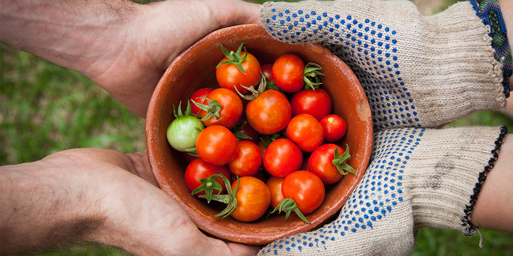
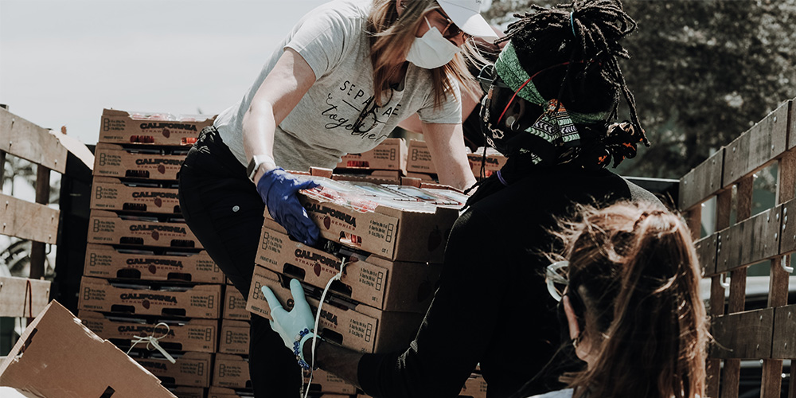

home > 사회공헌 > 사회공헌 개요
사회공헌 개요
KUMHO E&C
Engineering & construction
사회적기업, 교육, 지역상생, 환경 등 다양한 분야에서 사회에 공헌합니다.
-

- 나눔과 참여의 아름다운 기업문화
- 금호건설은 신뢰경영과 사회적 책임경영을 통해 사회공헌을 실천하고자 노력하고 있습니다.
- ‘나눔’과 ‘참여’는 금호건설의 사회공헌이념으로 자율적이고 지속적인 실천활동을 기본으로 하고 금호건설은 1사1촌 지원사업, 소외계층 지원사업, 환경운동, 문화예술 운동 등 각 영역에 걸쳐 사회공헌활동을 실천하고 있습니다.
-

- 사회공헌활동 테마의 발굴, 양성
- 기업의 사회적 역할에 대한 인식변화와 함께 기업의 사회공헌활동 형태도 변화하고 있습니다. 단순한 물품 지원에서 참여와 나눔의 형태로 소극적인 기부에서 적극적인 상생의 형태로의 변화가 그것입니다.
- 사회공헌활동을 단순한 기업홍보나 선택의 사항이 아닌 , 기업의 중요한 사업영역이자 필수적인 사항으로 규정, 선포하였습니다.
- 금호건설은 초창기의 시행착오를 거쳐 사회공헌활동의 전문성 확보를 위한 노력을 기울여 왔습니다. 이를 통해 사회봉사활동, 문화자원활동, 환경활동 등 주요 사회공헌활동의 영역을 확립하고 업태와 연관성 있는 전문화가 가능하며 수혜자에게 보다 큰 만족을 줄수 있는 사회공헌활동 테마를 지속 발굴, 양성하고 있습니다.
금호건설의 사회공헌 추진방향
‘사회공헌을 통해 삶의 가치를 향상시키는 기업’을 목표로 사회구성원 모두가 행복해질 수 있도록
지속적인 사회공헌 활동을 펼쳐 나가고 있습니다.
-
 지속가능성
지속적으로 사회적 가치를 창출할 수 있는형태의 사회공헌 모델 추구
지속가능성
지속적으로 사회적 가치를 창출할 수 있는형태의 사회공헌 모델 추구
- 진정성 시혜적 지원이 아닌 참여와 상호교감이 있는 사회공헌 추진
- 사회문제 해결 환경, 저출산 노령화, 동반성장 등 근본적 사회문제에 대한 지속적 고민과 진정성 전달